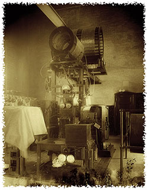

Cuiteur is a microblogging application that allows its users to produce short messages (cuits), which are accessible to a list of personal contacts (followers). You choose the users whose messages you want to receive and, conversely, other users will subscribe to your updates and receive them in real time.
Cuiteur has a large virtual community that makes it easy to create an online network.
In short, Cuiteur allows anybody to say anything to anyone.
Cuiteur allows you to publish cuits (short messages limited to 200 characters that will be read by the people who follow you (your subscribers)).
Cuiteur allows you to follow other users and read the cuits they publish. You have a search engine to find and select the people you want to follow.
Cuiteur Allows you to personally respond to a cuit and also to "recuit" a cuit: a message of your subscriptions is relayed to your followers.
Cuits can be marked with "tags". These are words in the messages that make it possible to do research on a specific subject and to define the trends of the discussions at a given moment.
Private data collected by Cuiteur and accessible online concern your name, birthdate, personal website and mini-biography that you can provide if desired.
Cuiteur does not use private information for targeted advertising. Cuiteur does not sell private information to any third party company or governmental organism.
Your cuits are publicly available for any other user to see. The act of following/unfollowing another user is not subjected to any king of validation.
All publications made on Cuiteur are the responsibility of their author. Before publishing a cuit, authors must first make sure they are not trespassing any laws of their residing country.
Cuiteur has exceptional technical infrastructures that allow the fastest response time of the internet. Our data centers are located on 4 continents and can take into account millions of simultaneous connections. All application developments are therefore designed to be fault-tolerant.
To store data and respond to requests, Cuiteur has selected very large servers. The databases were specifically designed and structured to offer the best performance, whatever the conditions of use and traffic.
You want to communicate, inform, search, add noise to the ambient cacophony, then Cuiteur is for you!
Do not wait further and register now!